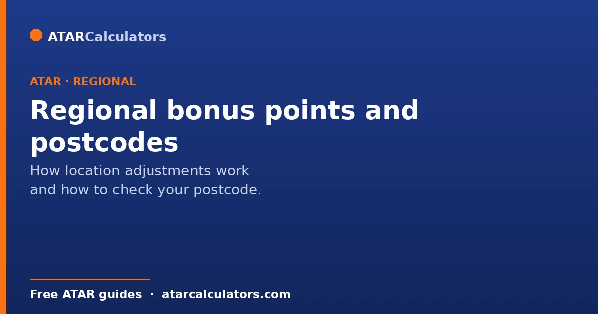
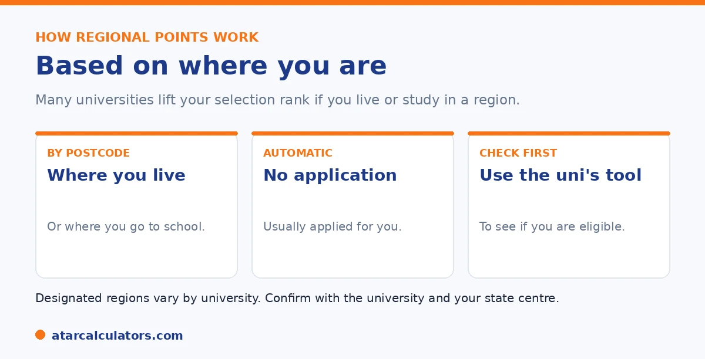

Here is the short version. Many universities add bonus points, called location adjustments, if you live in or attend school in a designated regional area. They are usually automatic, based on your postcode or your school, so you often do not need to apply. The designated regions and the points vary by university. Some use your home address, some your school, and some both. So check the specific university and your state admissions centre.
Regional bonus points are one of the most accessible boosts, because they are usually automatic. The catch is knowing whether your postcode or school counts.
Below is how they work, and how to check yours. To estimate your selection rank, use our regional points calculator.
Key takeaways
- Many universities add points for regional students.
- They are based on your postcode or your school.
- They are usually automatic, so you may not need to apply.
- Designated regions and points vary by university.
- Some use your home address, some your school, some both.
- Check the university and your state admissions centre.
How regional bonus points work
Regional bonus points are a kind of location adjustment. If you live in, or attend school in, a designated regional area, many universities add points to lift your selection rank.

The aim is to recognise that students outside major cities can face extra barriers to university. The points help level the field a little.
Based on postcode or school
Eligibility is usually based on either your home postcode, your school's location, or both. This is where universities differ. Some look at where you live, some at where you go to school, and some at both.
So a student might qualify at one university but not another, depending on which rule each uses. It is worth checking both your home postcode and your school against each university's criteria.
This postcode-or-school distinction is the detail that catches students out. So it pays to understand it and check carefully. A university that assesses eligibility on your home address rewards where you actually live. It uses a list of qualifying rural and remote postcodes, measured against a national geographic classification, often with a minimum period of residence. A university that assesses on school location instead rewards students who attended a school in a regional or remote area. That can help a student who lives just inside a city boundary but was schooled regionally, or the reverse. Some use both. And some let you qualify on either. The practical upshot is that the same student can qualify at one university and miss out at another purely because of which rule is applied. So a blanket assumption that you "do" or "do not" get regional points is unreliable. The sensible approach is to take your home postcode and your school. Check each against the specific criteria of every university you are applying to, rather than relying on a single answer. Where residence periods apply, keep evidence of your address history. This is because eligibility often depends on how long you lived at a qualifying location. And remember that regional points, however you qualify, feed your selection rank rather than your ATAR and combine with other adjustments up to each university's cap. So their value is greatest in the middle of the range and close to a course cut-off.
Usually automatic
The good news is that location adjustments are usually applied automatically. You generally do not need to lodge a separate application; the admissions centre and university work it out from your details.
That said, it is wise to confirm the points have been applied, especially if you are unsure your area qualifies. If something looks wrong, contact the university. See our guide on how much regional points are worth.
Want to estimate your selection rank?
Try the regional points calculator →How to check your postcode
Because there is no single national list, the reliable way to check is at the source. Most universities and admissions centres have a tool or list where you can enter your postcode or school to see if you qualify.
Check each university you are interested in, since the designated regions differ. Do not assume that qualifying at one means qualifying at all. Your state admissions centre is a good starting point.
Stacking with other adjustments
Regional points can usually be combined with other adjustments, such as subject points or the Educational Access Scheme. Together, these stack toward your selection rank, up to the university's cap.
So regional points are rarely the whole story. They often add to other boosts you qualify for. See our guide on stacking regional and equity points.
The residency requirement
Regional bonus points are based on where you live, so there is usually a residency requirement. You typically need to have lived at an eligible regional or remote address for a set period, commonly around the past five years, to qualify.
So a recent move to a regional area may not be enough on its own. The exact requirement is set by each admissions centre and university, so check how long you need to have lived at an eligible address for the courses you want.
How long you need to live there
The length of residency required varies, but a common rule is around five years at an eligible postcode, sometimes with a requirement that includes recent years. Some schemes count time over your life; others focus on a continuous recent period.
So if your time in a regional area is shorter, or split across locations, check the specific rule carefully. The requirement is there to identify genuine regional students, and how it is measured differs between schemes.
School location vs home address
Some schemes look at your home address, others at the location of your school, and some consider both. So it is possible to qualify based on where you went to school even if your home is elsewhere, or vice versa, depending on the scheme.
So when checking eligibility, note whether the scheme uses your residential postcode, your school’s location, or either. This affects who qualifies, and it is a detail worth confirming for each course.
How areas are classified
Whether an area counts as regional or remote is usually based on a recognised classification of remoteness, applied to postcodes. More remote areas may attract more points under some schemes, while areas close to major cities may not count at all.
So eligibility is not about how rural an area feels, but about how it is officially classified. Two towns that seem similar can fall on different sides of a classification, which is why checking the actual postcode list matters.
Do universities share the same postcode list?
Not necessarily. While schemes are broadly similar, each admissions centre and university publishes its own list of eligible regional and remote postcodes, and these can differ. So a postcode that qualifies at one university may not at another.
So there is no single national regional postcode list. Check the specific list for each university and course you are considering, rather than assuming a postcode that qualifies in one place qualifies everywhere.
What if you have moved?
If you have moved between regional and metropolitan areas, or between different regional areas, your eligibility depends on the scheme’s residency rule. Some count your total time in eligible areas; others need a continuous recent period at an eligible address.
So a mixed history does not automatically disqualify you, but it makes checking the rule important. Gather evidence of your addresses and their dates, since you may need to demonstrate your residency to claim the points.
Check for your specific course
Because postcode lists, residency rules and point values all vary, the only reliable way to know your regional adjustment is to check the specific course and its admissions centre. Look up the eligible postcode list, the residency requirement, and the points on offer.
So treat regional bonus points as course-specific, like other adjustments. A regional bonus points calculator can help you estimate the effect once you confirm you qualify.
Evidence you may need
To claim regional bonus points, you may need to prove where you have lived, especially if the points are not applied automatically. This can include documents showing your address and how long you lived there, such as official mail, enrolment records or a statutory declaration.
So keep evidence of your regional address and its dates, particularly if your history is mixed. Being able to demonstrate your residency ensures you receive the points you qualify for when your selection rank is calculated.
Factoring it into your plans
If you qualify for regional points, factor them into your course planning. Add your likely regional adjustment to your predicted ATAR to estimate your selection rank, and compare that against course cutoffs rather than your ATAR alone.
So regional points can widen your realistic course options. Knowing your adjusted rank helps you set preferences sensibly, including courses your ATAR alone would just miss. See the selection rank calculator.
Common questions
What postcodes get regional bonus points?
Those in areas a university designates as regional. There is no single national list, because each university sets its own designated regions. Check your postcode against each university's tool or your state admissions centre.
Is my postcode eligible for regional bonus points?
It depends on the university. Some base eligibility on your home postcode, some on your school's location, and some on both. Check both against each university's criteria, since the designated regions vary.
How do I check if my postcode qualifies?
Use the tool or list provided by each university or your state admissions centre, entering your postcode or school. Check each university you are interested in, since the designated regions differ from one to another.
Do I need to apply for regional bonus points?
Usually not. Location adjustments are generally applied automatically, based on your postcode or school. It is still wise to confirm the points have been applied, and to contact the university if something looks wrong.
Do regional points depend on my home or my school?
It varies by university. Some use your home address, some your school's location, and some both. So check both, since you might qualify under one rule but not another at a given university.
Can I combine regional points with other adjustments?
Usually, yes. Regional points can stack with other adjustments, such as subject points or the Educational Access Scheme, up to the university's total cap. And your selection rank cannot exceed 99.95.
Estimate your selection rank
See how regional points could change your selection rank. Free, and no signup.
Open the regional points calculator →Related guides
This guide is general information for students and parents, not formal admissions advice. Adjustment factors, schemes, caps and course cut-offs are set by each university and can change every year. They differ from one institution to another, and from course to course within the same institution. Always confirm the current details with the specific university and your state admissions centre (UAC, VTAC, QTAC, SATAC or TISC). A useful starting point is UAC's guide to selection rank adjustments. Reviewed by the ATARCalculators Editorial Team.